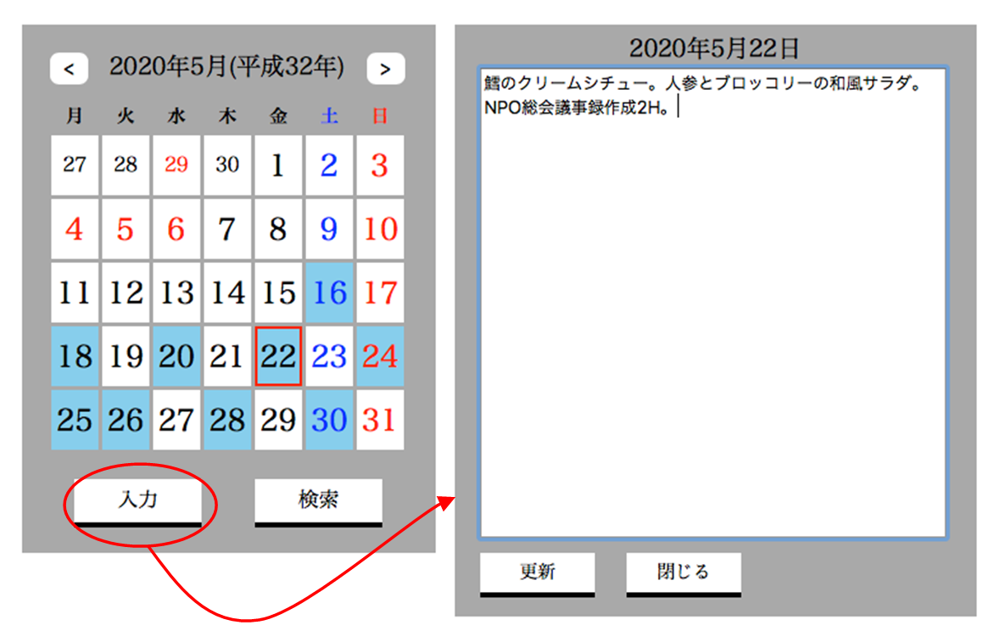
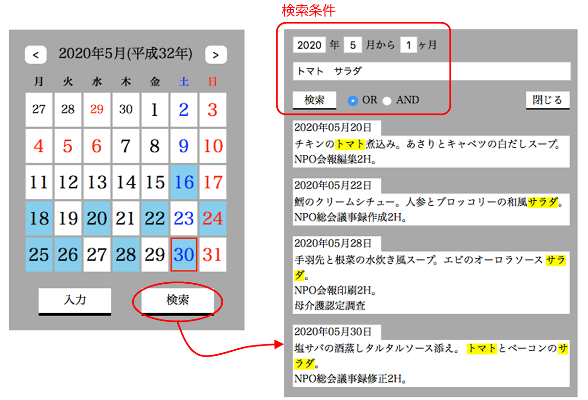
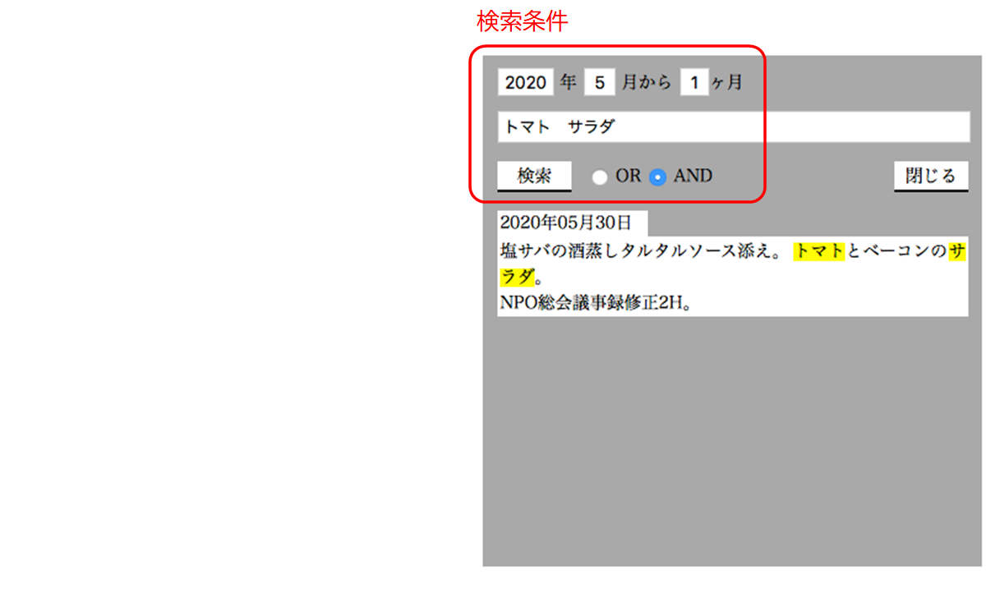

日記帳（JavaScript版）
テキスト入力
日付に対応した入力フォームを開き、テキストを入力することができる。入力がある日はカレンダーの日付の背景色が変わる。
入力領域を削除または空白文字で埋めて更新した場合、データを削除し、カレンダー上も未入力の状態になる。

画像をクリックすると動画が表示されます
キーワードによる日記帳の検索
キーワードによる全文検索を行い、一致したワードがある日のテキストを日付ごとに表示する。キーワードはハイライト表示する。キーワードは複数指定を可とし、OR条件、AND条件に対応する。検索の期間の範囲を指定することができる。
テキストの表示エリアをダブルクリックすると、その日付のテキスト入力フォームが開き、編集・更新を行うことができる。


画像をクリックすると動画が表示されます
技法的なこと
テキストの入出力
ブラウザから入力された日記帳のテキストデータはサーバのデータベースに保存される。日記帳テーブルは、キーの日付とテキスト本文から構成される。
サーバとのデータのやりとりは JavaScriptの実装により XMLHttpRequestオブジェクトを利用したHTTP送受信により実現する。
サーバサイドの処理はPHPスクリプトで実装する。
HTML定義
<textarea>タグの中にテキストをセットする
日記帳テキストの取得・JavaScript
指定した日付の日記帳テキストをサーバから受け取り、HTML文書の <textarea> タグの中に埋め込む。
データベースの照会・PHP
キーワードによるテキスト検索
テキストの検索は SQLのLIKE文により行う。キーワードで日記帳テーブルを検索しキーワードにヒットした日付のレコードを取得して返す。
OR検索
指定されたキーワードについてそれぞれ検索（SELECT）を行い、重複した日付のレコードはマージする。
AND検索
指定されたキーワードについてそれぞれ検索（SELECT）を行うが、２回目以降の検索では、それまでにヒットした日付のレコードのみを残すようにする。結果として全ての回の検索でヒットしたレコードだけが残る。
（参考） AND/OR検索を １回のSQL文で実現する方法 （ただし、キーワードの数により多段階のSQL文を動的に生成するとなると難しそうだ）
検索したキーワードをハイライト表示する
検索の結果、JavaScript の Stringオブジェクトのメソッドを使用して、表示テキスト上の全てのキーワードを黄色の背景色で囲む。これらのメソッドは文字列のマッチングに正規表現を利用できる。
キーワドの前後の空白をトリミングする。トリミングは文字列の前後の空白を削除するもので、文字列の中に含まれる空白はそのままである。
キーワードは複数入力されるので文字列を空白文字を区切り文字として分割し、配列に格納する。トリミングをしておかないと前後に空白があった場合、分割の結果、長さゼロの文字列を抜き出してしまう。
（参考）サーバのPHPでもキーワードを空白文字で区切って分割する処理を行っている。
文字列置換により全てのキーワードに対しマッチした文字列の前後に背景色を変える <span>タグを埋め込む。これをHTMLタグとして有効化するにはテキストを innerHTMLプロパティにセットしなくてはいけない。またそうすると改行コードは認識されなくなるので、これを<br>タグに変換する必要もある。
イベントハンドラ登録についての注意
本アプリケーションではカレンダー画面の入力、検索ボタンはテキスト入力画面の表示中はクリックしても無効となるように、画面間の遷移でイベントハンドラの有効化/無効化を行っている。
注意することは、イベントハンドラの登録（addEventListenerメソッド）は実行するごとにハンドラがひとつづつ追加されるので、イベントハンドラの削除（removeEventListenerメソッド）と「対」に行なわなければならない。そうしないとハンドラの登録が累積していき、１回のクリックで同じハンドラが複数回起動することになってしまう。
あるいは、ハンドラの実行が一回だけと決まっている場合は、onceオプションを使用することもできる。
ソースコード
HTML
JavaScript
diary1.js カレンダーとテキスト入力フォーム
diary2.js キーワードによる検索フォーム
CSS
サーバーサイドの処理
sql_r10.php 日記帳テーブルから指定された日付のレコードを読み込む
sql_r20.php 日記帳テーブルから指定された期間に存在するレコードの日付を読み込む
sql_w10.php 日記帳テーブルにデータを書き出す（変更または追加）
sql_w11.php 日記帳テーブルからデータを削除する
sql_r51.php 日記帳テーブルの指定された期間のデータからキーワードにマッチしたデータを読み込む（OR検索）
sql_r52.php 日記帳テーブルの指定された期間のデータからキーワードにマッチしたデータを読み込む（AND検索）
備忘録
Visual Studio Code（1.45.1）でソースコードを編集していると、ごく稀に制御コードがまぎれ込み、プログラムが誤動作することがある。どうもバックスペースが怪しい。エディター上では認識しないので、そういう可能性に行き当たったときは別のエディター（mi）でファイルを開いて確認する。